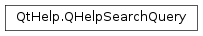

QHelpSearchQuery¶
Detailed Description¶
The
PySide2.QtHelp.QHelpSearchQueryclass contains the field name and the associated search termThe
PySide2.QtHelp.QHelpSearchQueryclass contains the field name and the associated search term. Depending on the field the search term might get split up into separate terms to be parsed differently by the search engine.Note
This class has been deprecated in favor of
PySide2.QtCore.QString.
-
class
PySide2.QtHelp.QHelpSearchQuery¶ -
class
PySide2.QtHelp.QHelpSearchQuery(field, wordList_) -
class
PySide2.QtHelp.QHelpSearchQuery(QHelpSearchQuery) Parameters: - wordList – list of strings
- QHelpSearchQuery –
PySide2.QtHelp.QHelpSearchQuery - field –
PySide2.QtHelp.QHelpSearchQuery.FieldName
Constructs a new empty
PySide2.QtHelp.QHelpSearchQuery.Constructs a new
PySide2.QtHelp.QHelpSearchQueryand initializes it with the givenfieldandwordList.
-
PySide2.QtHelp.QHelpSearchQuery.FieldName¶ This enum type specifies the field names that are handled by the search engine.
Constant Description QHelpSearchQuery.DEFAULT the default field provided by the search widget, several terms should be split and stored in the word list except search terms enclosed in quotes. QHelpSearchQuery.FUZZY words and passed to the search engine. QHelpSearchQuery.WITHOUT words and passed to the search engine. QHelpSearchQuery.PHRASE QHelpSearchQuery.ALL words and passed to the search engine QHelpSearchQuery.ATLEAST words and passed to the search engine
-
PySide2.QtHelp.QHelpSearchQuery.fieldName¶
-
PySide2.QtHelp.QHelpSearchQuery.wordList¶
© 2018 The Qt Company Ltd. Documentation contributions included herein are the copyrights of their respective owners. The documentation provided herein is licensed under the terms of the GNU Free Documentation License version 1.3 as published by the Free Software Foundation. Qt and respective logos are trademarks of The Qt Company Ltd. in Finland and/or other countries worldwide. All other trademarks are property of their respective owners.